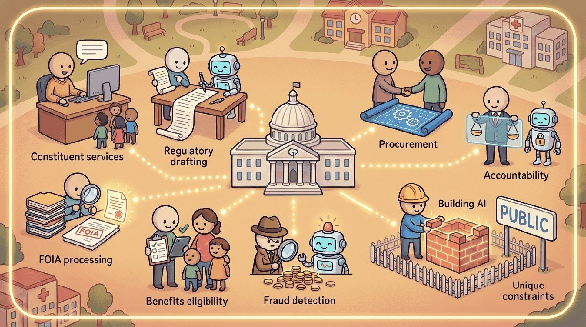

"Government LLMs serve the citizens who pay for them, not the vendor who built them."
Compass, Public-Interest AI Agent
Chapter 71 covered cybersecurity. This chapter covers government: public-sector deployments, defense, civic services, accessibility, FOIA and records management, and the procurement, transparency, and oversight requirements that public-sector AI now carries.
Government AI sits in a peculiar position: enormous potential value (every form, every benefits determination, every regulation touches millions of people) and uniquely high constraints (administrative-law due process, public-records obligations, procurement timelines longer than a model's shelf life). Successful public-sector LLM deployments in 2025-2026 share a common shape: narrow scope, conservative model choice, aggressive human-in-the-loop, and explicit accountability for who decided what when something goes wrong. Pilots that ignored any of those four invariably ended up in the news.
The U.S. federal anchor is OpenAI's ChatGPT Gov (Jan 2025), a tenant designed for U.S. federal employees, alongside the GSA's GovGPT pilot for procurement-Q&A. The UK anchor is the GDS GOV.UK Chat pilot (2024), which tested a grounded assistant against guidance pages. A concrete deployment-without-headlines example is the IRS Direct File pilot (2024), where LLM-assisted tax-code lookups stayed strictly in support, not adjudication, of taxpayer decisions: the boundary that keeps administrative-law due-process objections at bay.
Section 72.1 walks through the use cases that ship. Section 72.2 covers the failure modes. Section 72.3 covers OMB M-24-10, FedRAMP, and the broader regulatory framework. Section 72.4 walks through the public-sector grounded-assistant architecture. Section 72.5 closes with vendors and postmortems.
Chapter Overview
Government LLM deployment carries unique constraints: due-process obligations, FedRAMP and Section 508 compliance, public-records exposure, accountability under FOIA, and the procurement-versus-model-clock mismatch. This chapter walks the use cases that actually work (constituent service triage, FOIA, regulatory drafting, benefits pre-screening, fraud detection, knowledge search), the failure modes specific to government (NYC MyCity, due-process problems, accessibility failures), the regulatory framework (OMB M-24-10, FedRAMP, Section 508, EU AI Act, state inventory laws, NIST AI RMF), the public-sector grounded-assistant architecture (strict-scope retrieval, citations always, refusal by default, audit log, accessibility-first), and the vendor landscape plus the postmortems from NYC MyCity, Michigan MiDAS, Dutch SyRI, and Australian Robodebt.
Government AI is the industry where transparency and accountability are not optional. This chapter teaches what works, what fails, and what the procurement, civil-rights, and accessibility rules actually require.
- Map the government use cases (constituent service, FOIA, regulatory drafting, benefits, fraud, knowledge search) that actually work.
- Diagnose due-process problems, public-records exposure, and accessibility failures in government LLM deployments.
- Apply OMB M-24-10, FedRAMP, Section 508, and NIST AI RMF to a government LLM program.
- Architect a public-sector grounded assistant with strict scope, citations, refusal by default, and accessibility.
- Learn from NYC MyCity, Michigan MiDAS, Dutch SyRI, and Australian Robodebt postmortems.
Sections in This Chapter
Prerequisites
- Regulation and compliance from Chapter 53
- Privacy and data protection from Chapter 50
- Transparency disclosures from Chapter 54 (transparency)
- 72.1 Government Use Cases That Actually Work Constituent service triage, FOIA, regulatory drafting, benefits pre-screening, fraud detection, internal knowledge search. Intermediate
- 72.2 Failure Modes Specific to Government NYC MyCity, due-process problems, public-records exposure, accessibility failures, procurement-vs-model timelines. Advanced
- 72.3 Regulatory and Policy Framework for Government LLMs OMB M-24-10, FedRAMP, Section 508, EU AI Act, state AI inventory laws, NIST AI RMF. Advanced
- 72.4 Public-Sector Grounded Assistant Architecture Strict-scope retrieval, citations always, refusal by default, audit log, accessibility-first UI, FedRAMP-authorized vendors. Advanced
- 72.5 Government LLM Vendors and Postmortems Palantir AIP, Anduril, FedRAMP-authorized providers, plus NYC MyCity, Michigan MiDAS, Dutch SyRI, Australian Robodebt postmortems. Intermediate
What Comes Next
Government produced the strict-grounded-retrieval pattern that, in the next chapter, takes the parallel form of OT-isolation in manufacturing. Chapter 73 covers the industry where the human-in-the-loop boundary is between IT and OT zones rather than between administrative-law decisions.